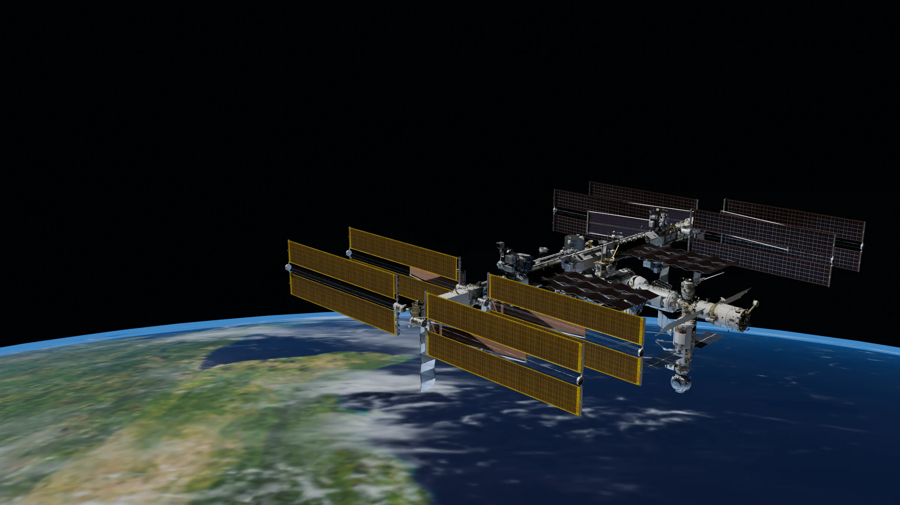
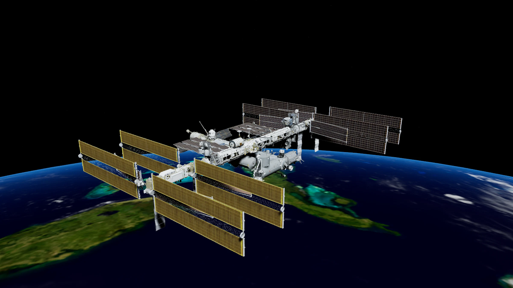
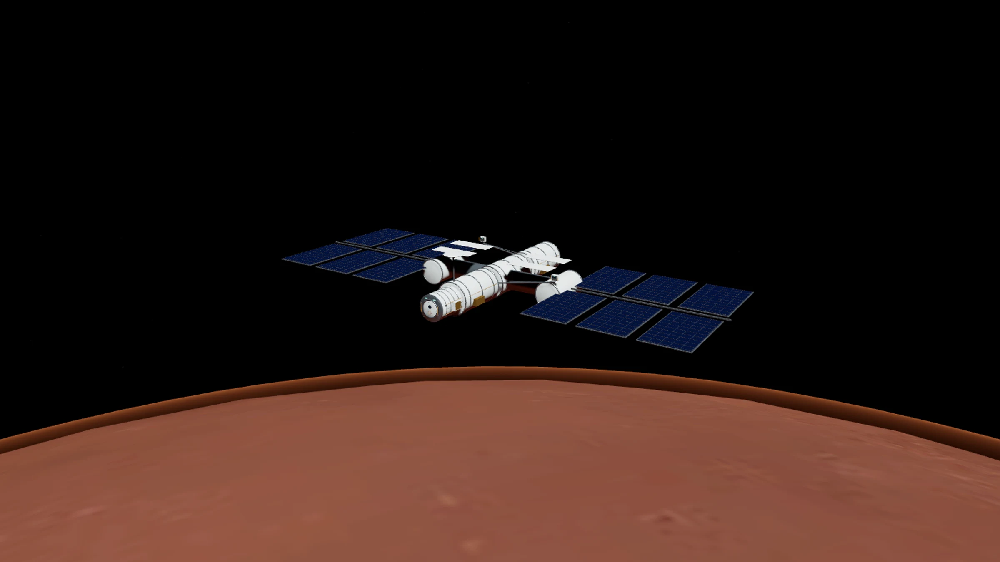
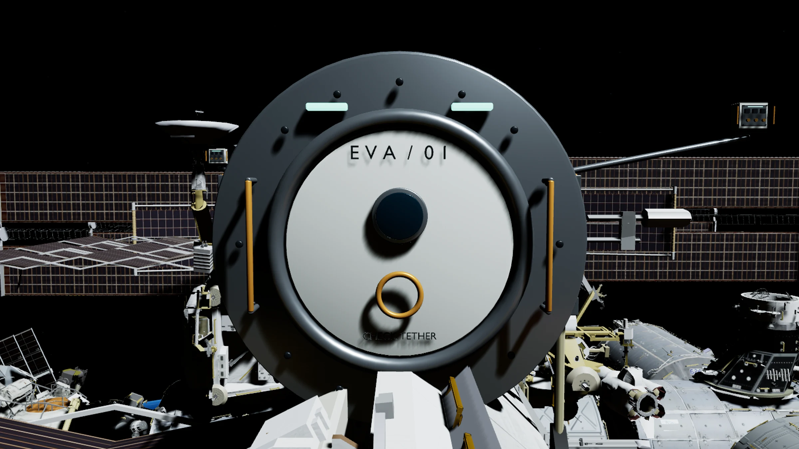
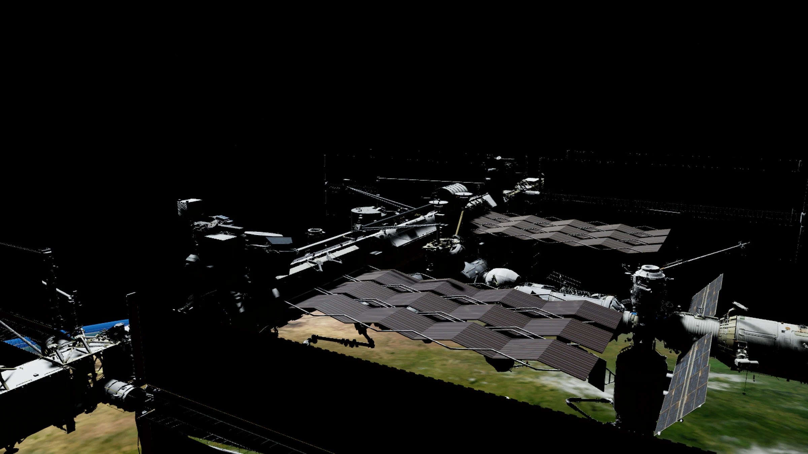

Vastpakken
Grijp een oppervlak binnen handbereik en trek jezelf langs de buitenkant van het station.

EEN RUIMTEWANDELING VOOR PC-VR
De aarde onder je. Het station binnen handbereik.
Laat los en ontdek hoe stilte voelt.
Je zweeft naast een ruimtestation. Eén hand aan de rail. Achter je ligt de aarde, groot en bijna onwerkelijk dichtbij.
Orbital EVA maakt van dat moment een interactieve ruimtewandeling. Je trekt jezelf langs het station, laat los en stuurt met korte jetpackimpulsen bij. Zonder impuls blijf je bewegen. Om stil te staan, moet je bewust afremmen.
Geen race tegen de klok. Wel de ruimte om te kijken, te oefenen en een kleine inspectiemissie uit te voeren.

Wolken boven oceanen, een dunne blauwe atmosfeerrand en een station met de herkenbare zonnepanelen van het ISS. De basis is een 3D-model van NASA, op schaal gebracht voor de ruimtewandeling.
Een zelfgemaakte EVA-trainingsmodule vult het NASA-model aan. Het is een interactieve interpretatie, geen gecertificeerde ISS-trainer.

Een roestkleurige wereld, een warmere atmosfeerrand en een speciaal ontworpen onderzoeksstation. De planeet gebruikt beeldmateriaal van NASA/JPL-Caltech; het station is een fictief ontwerp.
Het echte ISS draait om de aarde. De Marsomgeving is een afzonderlijk scenario met dezelfde EVA-bediening.

Grijp een oppervlak binnen handbereik en trek jezelf langs de buitenkant van het station.
Een afzet wordt een beweging. Zonder kunstmatige luchtweerstand blijf je doorzweven.
Doseer je jetpack en geef een tegenstoot om af te remmen. Je pak toont snelheid en stikstofvoorraad.
De stabiele stand houdt vrij rollen uitgeschakeld. Met de terugkeerfunctie kom je weer bij het vertrekpunt.
JE EERSTE EVA
Drie controlepunten geven je wandeling richting. Kom dichtbij, rem af en voer de inspectie uit.
Vind de marker bij de trainingsmodule en maak je eerste gecontroleerde benadering.
Navigeer naar het volgende controlepunt. Houd je relatieve snelheid laag voor de inspectie.
Controleer de laatste unit. Daarna blijf je vrij verkennen of keer je veilig terug.

Je hoort je pak.
Daarbuiten is het stil.
Unreal Engine voor de ervaring. Blender voor de hardware. NASA als visuele basis.
De vlucht is relatief ten opzichte van het station en bedoeld voor korte EVA-afstanden. De scène gebruikt planeetafmetingen en een gekozen baanhoogte voor het uitzicht. Het is geen volledige berekening van baanmechanica, zuurstofbeheer of echte astronautenprocedures.
De pc rendert de scène. De Quest levert het stereobeeld en de gevolgde hoofd- en controllerbewegingen via een geschikte OpenXR-verbinding. Op de Linux-werkplek is WiVRn beschikbaar. Beeld, bediening en comfort moeten op de aangesloten headset worden gecontroleerd.
Op de pc geef je impulsen met WASD en spatie/ctrl, kijk je rond met de muis en rem je met shift. Houd F vast om dichtbij een controlepunt te inspecteren. M wisselt de bestemming en H brengt je terug.
Voor de Quest is de volgende controllerindeling voorbereid: linkerstick voor impulsen, rechterstick voor hoogte en draaien, rechtertrigger voor remmen, grips voor vastpakken en A voor inspectie. Y kiest de wereld, X keert terug en B wisselt de bewegingsstand. Deze indeling moet nog op de aangesloten headset worden gecontroleerd.
Het openingsbeeld is een afzonderlijke Blender-visualisatie met dezelfde stationgeometrie en aardtexturen. De overige galeriebeelden komen uit het Unreal-project. Het zijn geen foto's van een echte ruimtewandeling en geen bewijs van prestaties of beeldkwaliteit op de Quest.